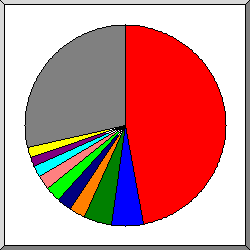
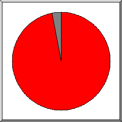
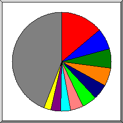
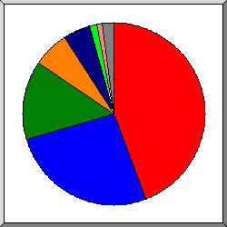
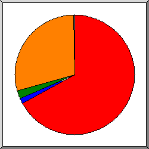
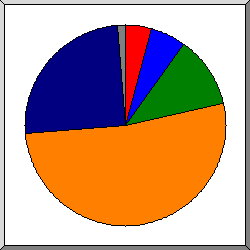
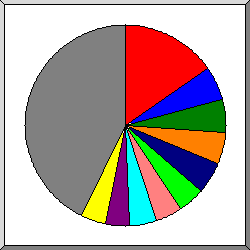

Статистика обращений к greenbro.net
Статистика обращений к greenbro.net
Программа стартовала в пн. 30 сен 2019 16:52.
Анализ обращений к серверу с вт. 4 дек 2018 01:41 по пн. 30 сен 2019 14:35 (300,54 дней).
Статистика обращений к greenbro.netПрограмма стартовала в пн. 30 сен 2019 16:52.
Анализ обращений к серверу с вт. 4 дек 2018 01:41 по пн. 30 сен 2019 14:35 (300,54 дней).
(Переход: Вверх | Основная Информация | Статистика по месяцам | Статистика по дням недели | Статистика по времени суток | Статистика по доменам | Статистика по организациям | Статистика по перенаправляющим ссылкам | Статистика отказов по ссылкам | Статистика по ссылающимся сайтам | Статистика по браузерам (подробная) | Статистика по браузерам (суммарная) | Статистика по операционным системам | Статистика по коду возврата | Статистика по размерам файлов | Статистика по типам файлов | Статистика по директориям | Статистика по запросам)
Запись в круглых скобках - данные за 7 дней до 30 сен 2019 16:52.
Успешных обращений: 13 789 (586)
Среднее кол. успешных обращений в день: 45 (83)
Успешных обращений к страницам: 1 780 (81)
Среднее кол. успешных обращений к страницам в день: 5 (11)
Неуспешных запросов: 5 823 (35)
Перенаправленных запросов: 292 (0)
Количество запрошенных файлов: 116 (1 120)
Количество обслуженных хостов: 1 467 (1 784)
Данных передано: 159,78 мегабайт (13,22 мегабайт)
Среднее кол. переданных данных в день: 544,41 килобайт (1,89 мегабайт)
(Переход: Вверх | Основная Информация | Статистика по месяцам | Статистика по дням недели | Статистика по времени суток | Статистика по доменам | Статистика по организациям | Статистика по перенаправляющим ссылкам | Статистика отказов по ссылкам | Статистика по ссылающимся сайтам | Статистика по браузерам (подробная) | Статистика по браузерам (суммарная) | Статистика по операционным системам | Статистика по коду возврата | Статистика по размерам файлов | Статистика по типам файлов | Статистика по директориям | Статистика по запросам)
Каждый символ ( ) отображает 15 обращений к страницам или около этого.
) отображает 15 обращений к страницам или около этого.
| месяц | запросы | страниц | |
|---|---|---|---|
| дек 2018 | 69 | 69 |  |
| янв 2019 | 58 | 55 | |
| фев 2019 | 40 | 40 |  |
| мар 2019 | 66 | 66 | |
| апр 2019 | 68 | 62 | |
| мая 2019 | 127 | 56 | |
| июн 2019 | 375 | 99 | |
| июл 2019 | 2619 | 488 |  |
| авг 2019 | 7744 | 490 | |
| сен 2019 | 2623 | 355 |   |
Наибольшее количество обращений в авг 2019 (490 обращений к страницам).
(Переход: Вверх | Основная Информация | Статистика по месяцам | Статистика по дням недели | Статистика по времени суток | Статистика по доменам | Статистика по организациям | Статистика по перенаправляющим ссылкам | Статистика отказов по ссылкам | Статистика по ссылающимся сайтам | Статистика по браузерам (подробная) | Статистика по браузерам (суммарная) | Статистика по операционным системам | Статистика по коду возврата | Статистика по размерам файлов | Статистика по типам файлов | Статистика по директориям | Статистика по запросам)
Каждый символ () отображает 8 обращений к страницам или около этого.
| день | запросы | страниц | |
|---|---|---|---|
| вс. | 2405 | 228 | |
| пн. | 1521 | 230 | |
| вт. | 1376 | 219 | |
| ср. | 2862 | 320 | |
| чт. | 2358 | 324 | |
| пт. | 1333 | 243 | |
| сб. | 1934 | 216 | |
(Переход: Вверх | Основная Информация | Статистика по месяцам | Статистика по дням недели | Статистика по времени суток | Статистика по доменам | Статистика по организациям | Статистика по перенаправляющим ссылкам | Статистика отказов по ссылкам | Статистика по ссылающимся сайтам | Статистика по браузерам (подробная) | Статистика по браузерам (суммарная) | Статистика по операционным системам | Статистика по коду возврата | Статистика по размерам файлов | Статистика по типам файлов | Статистика по директориям | Статистика по запросам)
Каждый символ () отображает 5 обращений к страницам или около этого.
| час | запросы | страниц | |
|---|---|---|---|
| 0 | 497 | 54 | |
| 1 | 101 | 40 | |
| 2 | 186 | 58 | |
| 3 | 133 | 79 | |
| 4 | 141 | 57 | |
| 5 | 147 | 61 | |
| 6 | 160 | 91 | |
| 7 | 135 | 75 | |
| 8 | 197 | 72 | |
| 9 | 282 | 77 | |
| 10 | 522 | 62 | |
| 11 | 529 | 46 | |
| 12 | 299 | 53 | |
| 13 | 446 | 69 | |
| 14 | 276 | 56 | |
| 15 | 1098 | 151 | |
| 16 | 595 | 59 | |
| 17 | 1524 | 100 | |
| 18 | 1808 | 76 | |
| 19 | 853 | 73 | |
| 20 | 601 | 58 | |
| 21 | 586 | 68 | |
| 22 | 1143 | 179 | |
| 23 | 1530 | 66 | |
(Переход: Вверх | Основная Информация | Статистика по месяцам | Статистика по дням недели | Статистика по времени суток | Статистика по доменам | Статистика по организациям | Статистика по перенаправляющим ссылкам | Статистика отказов по ссылкам | Статистика по ссылающимся сайтам | Статистика по браузерам (подробная) | Статистика по браузерам (суммарная) | Статистика по операционным системам | Статистика по коду возврата | Статистика по размерам файлов | Статистика по типам файлов | Статистика по директориям | Статистика по запросам)
Список доменов, отсортировано по суммарному трафику.
| запросы | %байт | домен |
|---|---|---|
| 13789 | 100% | [нераспознанный IP-адрес] |
(Переход: Вверх | Основная Информация | Статистика по месяцам | Статистика по дням недели | Статистика по времени суток | Статистика по доменам | Статистика по организациям | Статистика по перенаправляющим ссылкам | Статистика отказов по ссылкам | Статистика по ссылающимся сайтам | Статистика по браузерам (подробная) | Статистика по браузерам (суммарная) | Статистика по операционным системам | Статистика по коду возврата | Статистика по размерам файлов | Статистика по типам файлов | Статистика по директориям | Статистика по запросам)

Поделено на сектора по количеству обращений.
 185.11
185.11
 40
40
 106
106
 178.120
178.120
 36
36
 66.249
66.249
 54
54
 123
123
 95
95
 137.226
137.226
 другое
другое
Показано первые 20 организаций - по количеству обращений, отсортировано по количеству обращений.
| запросы | %байт | организация |
|---|---|---|
| 8224 | 51,49% | 185.11 |
| 829 | 17,21% | 40 |
| 468 | 3,80% | 106 |
| 444 | 2,18% | 178.120 |
| 282 | 3,14% | 36 |
| 221 | 1,32% | 66.249 |
| 208 | 0,34% | 54 |
| 206 | 2,49% | 123 |
| 185 | 0,94% | 95 |
| 159 | 0,28% | 137.226 |
| 151 | 0,44% | 193.201 |
| 122 | 1,75% | 209.17 |
| 121 | 0,65% | 207.46 |
| 109 | 2,05% | 220.181 |
| 102 | 0,34% | 157.55 |
| 99 | 0,89% | 193.106 |
| 88 | 0,12% | 34 |
| 86 | 0,91% | 60 |
| 80 | 0,57% | 194.183 |
| 78 | 0,56% | 111 |
| 1527 | 8,55% | [не распознано: 139 организаций] |
(Переход: Вверх | Основная Информация | Статистика по месяцам | Статистика по дням недели | Статистика по времени суток | Статистика по доменам | Статистика по организациям | Статистика по перенаправляющим ссылкам | Статистика отказов по ссылкам | Статистика по ссылающимся сайтам | Статистика по браузерам (подробная) | Статистика по браузерам (суммарная) | Статистика по операционным системам | Статистика по коду возврата | Статистика по размерам файлов | Статистика по типам файлов | Статистика по директориям | Статистика по запросам)

Поделено на сектора количество перенаправленных запросов.
https://greenbro.net/scripts/contact.php
https://greenbro.net/registration/registration.php
https://greenbro.net/cgi-sys/suspendedpage.cgi
другое
Список ссылающихся URLей, отсортировано количество перенаправленных запросов.
(Переход: Вверх | Основная Информация | Статистика по месяцам | Статистика по дням недели | Статистика по времени суток | Статистика по доменам | Статистика по организациям | Статистика по перенаправляющим ссылкам | Статистика отказов по ссылкам | Статистика по ссылающимся сайтам | Статистика по браузерам (подробная) | Статистика по браузерам (суммарная) | Статистика по операционным системам | Статистика по коду возврата | Статистика по размерам файлов | Статистика по типам файлов | Статистика по директориям | Статистика по запросам)

Поделено на сектора по количеству отказов.
https://greenbro.net/messages/success_contact.php
https://greenbro.net/scripts/goods.php
https://greenbro.net/
https://greenbro.net/scripts/allthings.php
https://greenbro.net/scripts/foods.php
https://greenbro.net/index.php
http://greenbro.net/wp-login.php
https://greenbro.net/scripts/contact.php
другое
Показано первые 30 ссылающихся URLs - по количеству отказов, отсортировано по количеству отказов.
(Переход: Вверх | Основная Информация | Статистика по месяцам | Статистика по дням недели | Статистика по времени суток | Статистика по доменам | Статистика по организациям | Статистика по перенаправляющим ссылкам | Статистика отказов по ссылкам | Статистика по ссылающимся сайтам | Статистика по браузерам (подробная) | Статистика по браузерам (суммарная) | Статистика по операционным системам | Статистика по коду возврата | Статистика по размерам файлов | Статистика по типам файлов | Статистика по директориям | Статистика по запросам)

Поделено на сектора по количеству обращений.
https://greenbro.net/
другое
Список ссылающихся сайтов, отсортировано по количеству обращений.
| запросы | сайт |
|---|---|
| 10285 | https://greenbro.net/ |
| 30 | http://www.sogou.com/ |
| 24 | http://greenbro.net/ |
| 8 | http://www.greenbro.net/ |
| 4 | https://oper.fondy.eu/ |
| 3 | https://portal.fondy.eu/ |
| 3 | https://www.bing.com/ |
| 2 | http://www.mail.greenbro.net/ |
| 1 | http://datadepths.com/ |
| 1 | https://www.greenbro.net/ |
| 1 | https://www.sogou.com/ |
| 1 | https://duckduckgo.com/ |
(Переход: Вверх | Основная Информация | Статистика по месяцам | Статистика по дням недели | Статистика по времени суток | Статистика по доменам | Статистика по организациям | Статистика по перенаправляющим ссылкам | Статистика отказов по ссылкам | Статистика по ссылающимся сайтам | Статистика по браузерам (подробная) | Статистика по браузерам (суммарная) | Статистика по операционным системам | Статистика по коду возврата | Статистика по размерам файлов | Статистика по типам файлов | Статистика по директориям | Статистика по запросам)

Поделено на сектора по количеству обращений к странице.
Sogou web spider/4.0(+http://www.sogou.com/docs/help/webmasters.htm#07)
Mozilla/5.0 (X11; Linux x86_64) AppleWebKit/537.36 (KHTML, like Gecko) Chrome/73.0.3683.75 Safari/537.36
Mozilla/5.0 (compatible; Nimbostratus-Bot/v1.3.2; http://cloudsystemnetworks.com)
Mozilla/5.0 (Windows NT 10.0; Win64; x64)AppleWebKit/537.36 (KHTML, like Gecko) Chrome/66.0.3359.181 Safari/537.36
Mozilla/5.0 (Macintosh; Intel Mac OS X 10.11; rv:47.0) Gecko/20100101 Firefox/47.0
Go-http-client/1.1
Mozilla/5.0 (Windows NT 6.1; WOW64) AppleWebKit/537.36 (KHTML, like Gecko) Chrome/50.0.2661.102 Safari/537.36; 360Spider
Mozilla/5.0 (compatible; YandexBot/3.0; +http://yandex.com/bots)
Mozilla/5.0 (Windows NT 10.0; WOW64) AppleWebKit/537.36 (KHTML, like Gecko) Chrome/66.0.3359.117 Safari/537.36
Mozilla/5.0 zgrab/0.x (compatible; Researchscan/t12sns; +http://researchscan.comsys.rwth-aachen.de)
другое
Показано первые 40 браузеров - по количеству обращений к странице, отсортировано по количеству обращений к странице.
| запросы | страниц | браузер |
|---|---|---|
| 268 | 236 | Sogou web spider/4.0(+http://www.sogou.com/docs/help/webmasters.htm#07) |
| 8791 | 159 | Mozilla/5.0 (X11; Linux x86_64) AppleWebKit/537.36 (KHTML, like Gecko) Chrome/73.0.3683.75 Safari/537.36 |
| 122 | 122 | Mozilla/5.0 (compatible; Nimbostratus-Bot/v1.3.2; http://cloudsystemnetworks.com) |
| 88 | 88 | Mozilla/5.0 (Windows NT 10.0; Win64; x64)AppleWebKit/537.36 (KHTML, like Gecko) Chrome/66.0.3359.181 Safari/537.36 |
| 86 | 85 | Mozilla/5.0 (Macintosh; Intel Mac OS X 10.11; rv:47.0) Gecko/20100101 Firefox/47.0 |
| 74 | 74 | Go-http-client/1.1 |
| 68 | 68 | Mozilla/5.0 (Windows NT 6.1; WOW64) AppleWebKit/537.36 (KHTML, like Gecko) Chrome/50.0.2661.102 Safari/537.36; 360Spider |
| 165 | 66 | Mozilla/5.0 (compatible; YandexBot/3.0; +http://yandex.com/bots) |
| 58 | 56 | Mozilla/5.0 (Windows NT 10.0; WOW64) AppleWebKit/537.36 (KHTML, like Gecko) Chrome/66.0.3359.117 Safari/537.36 |
| 53 | 53 | Mozilla/5.0 zgrab/0.x (compatible; Researchscan/t12sns; +http://researchscan.comsys.rwth-aachen.de) |
| 53 | 53 | Mozilla/5.0 zgrab/0.x (compatible; Researchscan/t13rl; +http://researchscan.comsys.rwth-aachen.de) |
| 53 | 53 | Mozilla/5.0 zgrab/0.x (compatible; Researchscan/t12ca; +http://researchscan.comsys.rwth-aachen.de) |
| 48 | 48 | Mozilla/5.0 (Macintosh; Intel Mac OS X 10_12_6) AppleWebKit/537.36 (KHTML, like Gecko) Chrome/61.0.3163.100 Safari/537.36 |
| 61 | 44 | Mozilla/5.0 (compatible; MJ12bot/v1.4.8; http://mj12bot.com/) |
| 45 | 39 | Mozilla/5.0 (iPhone; CPU iPhone OS 7_0 like Mac OS X) AppleWebKit/537.51.1 (KHTML, like Gecko) Version/7.0 Mobile/11A465 Safari/9537.53 (compatible; bingbot/2.0; +http://www.bing.com/bingbot.htm) |
| 264 | 38 | Mozilla/5.0 (compatible; bingbot/2.0; +http://www.bing.com/bingbot.htm) |
| 124 | 37 | Mozilla/5.0 (Linux; Android 6.0.1; Nexus 5X Build/MMB29P) AppleWebKit/537.36 (KHTML, like Gecko) Chrome/41.0.2272.96 Mobile Safari/537.36 (compatible; Googlebot/2.1; +http://www.google.com/bot.html) |
| 56 | 36 | Mozilla/5.0 (Windows NT 6.1; Win64; x64) AppleWebKit/537.36 (KHTML, like Gecko) Chrome/40.0.2214.85 Safari/537.36 |
| 126 | 32 | Mozilla/5.0 (compatible; AhrefsBot/6.1; +http://ahrefs.com/robot/) |
| 466 | 30 | Mozilla/5.0 (Windows NT 6.1; Win64; x64) AppleWebKit/537.36 (KHTML, like Gecko) Chrome/74.0.3729.169 Safari/537.36 |
| 36 | 24 | Mozilla/5.0 (compatible; Googlebot/2.1; +http://www.google.com/bot.html) |
| 23 | 23 | Mozilla/5.0 (compatible; AhrefsBot/5.2; +http://ahrefs.com/robot/) |
| 21 | 21 | python-requests/2.22.0 |
| 253 | 13 | Mozilla/5.0 (Linux; Android 7.1.1; SM-J510H Build/NMF26X) AppleWebKit/537.36 (KHTML, like Gecko) Chrome/60.0.3112.116 Mobile Safari/537.36 |
| 11 | 11 | Mozilla/5.0 (compatible; NetcraftSurveyAgent/1.0; +info@netcraft.com) |
| 14 | 10 | Mozilla/5.0 (Windows NT 10.0; Win64; x64) AppleWebKit/537.36 (KHTML, like Gecko) Chrome/74.0.3729.169 Safari/537.36 |
| 8 | 8 | Mozilla/5.0 (compatible; Baiduspider/2.0; +http://www.baidu.com/search/spider.html) |
| 26 | 8 | CheckMarkNetwork/1.0 (+http://www.checkmarknetwork.com/spider.html) |
| 49 | 6 | Mozilla/5.0 (compatible; Dataprovider.com) |
| 6 | 6 | Mozilla/5.0 (Macintosh; Intel Mac OS X 10_8_3) AppleWebKit/537.31 (KHTML, like Gecko) Chrome/26.0.1410.65 Safari/537.31 |
| 5 | 5 | Mozilla/5.0 (Macintosh; Intel Mac OS X 10_12_5) AppleWebKit/537.36 (KHTML, like Gecko) Chrome/58.0.3029.110 Safari/537.36 |
| 5 | 5 | Mozilla/5.0 (X11; Linux x86_64) AppleWebKit/537.36 (KHTML, like Gecko) Chrome/34.0.1847.137 Safari/537.36 |
| 5 | 5 | Mozilla/5.0 (Windows NT 6.1; WOW64; rv:64.0) Gecko/20100101 Firefox/64.0 |
| 5 | 5 | Mozilla/5.0 (Windows NT 10.0; Win64; x64) AppleWebKit/537.36 (KHTML, like Gecko) Chrome/74.0.3729.131 Safari/537.36 |
| 96 | 4 | Mozilla/5.0 (Linux; U; Android 3.0; en-us; Xoom Build/HRI39) AppleWebKit/525.10 (KHTML, like Gecko) Version/3.0.4 Mobile Safari/523.12.2 |
| 4 | 4 | Mozilla/5.0 (X11; Linux x86_64) AppleWebKit/537.36 (KHTML, like Gecko) Chrome/67.0.3396.87 Safari/537.36 OPR/54.0.2952.60 |
| 4 | 4 | python-requests/2.21.0 |
| 8 | 4 | Mozilla/5.0 (compatible; DuckDuckGo-Favicons-Bot/1.0; +http://duckduckgo.com) |
| 4 | 4 | Mozilla/5.0 (X11; Ubuntu; Linux x86_64; rv:58.0) Gecko/20100101 Firefox/58.0 |
| 47 | 4 | Mozilla/5.0 (Windows NT 10.0; Win64; x64) AppleWebKit/537.36 (KHTML, like Gecko) Chrome/75.0.3770.100 Safari/537.36 |
| 2077 | 176 | [не распознано: 170 браузеров] |
(Переход: Вверх | Основная Информация | Статистика по месяцам | Статистика по дням недели | Статистика по времени суток | Статистика по доменам | Статистика по организациям | Статистика по перенаправляющим ссылкам | Статистика отказов по ссылкам | Статистика по ссылающимся сайтам | Статистика по браузерам (подробная) | Статистика по браузерам (суммарная) | Статистика по операционным системам | Статистика по коду возврата | Статистика по размерам файлов | Статистика по типам файлов | Статистика по директориям | Статистика по запросам)

Поделено на сектора по количеству обращений к странице.
Safari
Netscape (compatible)
Sogou web spider
Firefox
Go-http-client
python-requests
другое
Список браузеров на которые приходиться, как минимум 1 обращение к странице, отсортировано по количеству обращений к странице.
| N | запросы | страниц | браузер |
|---|---|---|---|
| 1 | 11589 | 729 | Safari |
| 10856 | 676 | Safari/537 | |
| 606 | 39 | Safari/9537 | |
| 96 | 4 | Safari/523 | |
| 3 | 3 | Safari/532 | |
| 15 | 2 | Safari/533 | |
| 10 | 2 | Safari/534 | |
| 2 | 2 | Safari/601 | |
| 1 | 1 | Safari/603 | |
| 2 | 1077 | 545 | Netscape (compatible) |
| 3 | 268 | 236 | Sogou web spider |
| 268 | 236 | Sogou web spider/4 | |
| 4 | 167 | 126 | Firefox |
| 86 | 85 | Firefox/47 | |
| 8 | 8 | Firefox/3 | |
| 6 | 6 | Firefox/64 | |
| 6 | 6 | Firefox/58 | |
| 4 | 4 | Firefox/62 | |
| 24 | 3 | Firefox/67 | |
| 2 | 2 | Firefox/35 | |
| 2 | 2 | Firefox/54 | |
| 2 | 2 | Firefox/66 | |
| 1 | 1 | Firefox/42 | |
| 5 | 74 | 74 | Go-http-client |
| 74 | 74 | Go-http-client/1 | |
| 6 | 28 | 28 | python-requests |
| 28 | 28 | python-requests/2 | |
| 7 | 26 | 8 | CheckMarkNetwork |
| 26 | 8 | CheckMarkNetwork/1 | |
| 8 | 232 | 7 | MSIE |
| 3 | 3 | MSIE/6 | |
| 3 | 2 | MSIE/10 | |
| 1 | 1 | MSIE/8 | |
| 3 | 1 | MSIE/9 | |
| 9 | 265 | 5 | Mozilla |
| 3 | 3 | Mozilla/1 | |
| 10 | 3 | 3 | facebookexternalhit |
| 3 | 3 | facebookexternalhit/1 | |
| 11 | 2 | 2 | CATExplorador |
| 2 | 2 | CATExplorador/1 | |
| 12 | 18 | 1 | panscient.com |
| 13 | 1 | 1 | Opera |
| 1 | 1 | Opera/9 | |
| 14 | 1 | 1 | Python-urllib |
| 1 | 1 | Python-urllib/2 | |
| 15 | 1 | 1 | Pandalytics |
| 1 | 1 | Pandalytics/1 | |
| 24 | 0 | [не распознано: 1 браузер] |
(Переход: Вверх | Основная Информация | Статистика по месяцам | Статистика по дням недели | Статистика по времени суток | Статистика по доменам | Статистика по организациям | Статистика по перенаправляющим ссылкам | Статистика отказов по ссылкам | Статистика по ссылающимся сайтам | Статистика по браузерам (подробная) | Статистика по браузерам (суммарная) | Статистика по операционным системам | Статистика по коду возврата | Статистика по размерам файлов | Статистика по типам файлов | Статистика по директориям | Статистика по запросам)

Поделено на сектора по количеству обращений к странице.
Неизвестная ОС
роботы
Windows
Unix
Macintosh
Список операционных систем, отсортировано по количеству обращений к странице.
| N | запросы | страниц | ОС |
|---|---|---|---|
| 1 | 1058 | 591 | Неизвестная ОС |
| 2 | 633 | 381 | роботы |
| 3 | 1721 | 343 | Windows |
| 461 | 206 | Windows NT | |
| 1246 | 123 | Неизвестная Windows-система | |
| 14 | 14 | Windows XP | |
| 4 | 9594 | 258 | Unix |
| 9594 | 258 | Linux | |
| 5 | 770 | 194 | Macintosh |
(Переход: Вверх | Основная Информация | Статистика по месяцам | Статистика по дням недели | Статистика по времени суток | Статистика по доменам | Статистика по организациям | Статистика по перенаправляющим ссылкам | Статистика отказов по ссылкам | Статистика по ссылающимся сайтам | Статистика по браузерам (подробная) | Статистика по браузерам (суммарная) | Статистика по операционным системам | Статистика по коду возврата | Статистика по размерам файлов | Статистика по типам файлов | Статистика по директориям | Статистика по запросам)

Поделено на сектора по количеству обращений.
200 OK
302 Document found elsewhere
304 Not modified since last retrieval
404 Document not found
другое
Список кодов возврата, отсортированный по порядковым номерам.
| запросы | код статус |
|---|---|
| 13213 | 200 OK |
| 4 | 206 Partial content |
| 292 | 302 Document found elsewhere |
| 572 | 304 Not modified since last retrieval |
| 5765 | 404 Document not found |
| 7 | 4xx [Miscellaneous client/user errors] |
| 51 | 500 Internal server error |
(Переход: Вверх | Основная Информация | Статистика по месяцам | Статистика по дням недели | Статистика по времени суток | Статистика по доменам | Статистика по организациям | Статистика по перенаправляющим ссылкам | Статистика отказов по ссылкам | Статистика по ссылающимся сайтам | Статистика по браузерам (подробная) | Статистика по браузерам (суммарная) | Статистика по операционным системам | Статистика по коду возврата | Статистика по размерам файлов | Статистика по типам файлов | Статистика по директориям | Статистика по запросам)

Поделено на сектора по количеству обращений.
0
101B- 1kB
1kB- 10kB
10kB-100kB
другое
| размер | запросы | %байт |
|---|---|---|
| 0 | 698 | |
| 1B- 10B | 66 | |
| 11B- 100B | 75 | |
| 101B- 1kB | 1983 | 0,60% |
| 1kB- 10kB | 7450 | 11,82% |
| 10kB-100kB | 3435 | 76,48% |
| 100kB- 1MB | 82 | 11,09% |
(Переход: Вверх | Основная Информация | Статистика по месяцам | Статистика по дням недели | Статистика по времени суток | Статистика по доменам | Статистика по организациям | Статистика по перенаправляющим ссылкам | Статистика отказов по ссылкам | Статистика по ссылающимся сайтам | Статистика по браузерам (подробная) | Статистика по браузерам (суммарная) | Статистика по операционным системам | Статистика по коду возврата | Статистика по размерам файлов | Статистика по типам файлов | Статистика по директориям | Статистика по запросам)

Поделено на сектора по суммарному трафику.
.js [JavaScript code]
.jpg [JPEG graphics]
.css [Cascading Style Sheets]
[директории]
.woff2
.png [PNG graphics]
.php [PHP]
другое
Список расширений на которые приходиться, как минимум 0,1% трафика, отсортировано по суммарному трафику.
| запросы | %байт | расширение |
|---|---|---|
| 1800 | 40,13% | .js [JavaScript code] |
| 2017 | 34,00% | .jpg [JPEG graphics] |
| 3424 | 7,82% | .css [Cascading Style Sheets] |
| 1780 | 5,62% | [директории] |
| 501 | 4,01% | .woff2 |
| 864 | 3,89% | .png [PNG graphics] |
| 2877 | 3,21% | .php [PHP] |
| 70 | 0,91% | .ttf |
| 243 | 0,20% | .svg |
| 213 | 0,21% | [не распознано: 4 расширений] |
(Переход: Вверх | Основная Информация | Статистика по месяцам | Статистика по дням недели | Статистика по времени суток | Статистика по доменам | Статистика по организациям | Статистика по перенаправляющим ссылкам | Статистика отказов по ссылкам | Статистика по ссылающимся сайтам | Статистика по браузерам (подробная) | Статистика по браузерам (суммарная) | Статистика по операционным системам | Статистика по коду возврата | Статистика по размерам файлов | Статистика по типам файлов | Статистика по директориям | Статистика по запросам)

Поделено на сектора по суммарному трафику.
/lib/
/images/
/other_css/
[корневой каталог]
/fonts/
/scripts/
/js/
другое
Список директорий на которые приходиться, как минимум 0,01% трафика, отсортировано по суммарному трафику.
| запросы | %байт | директория |
|---|---|---|
| 1850 | 39,58% | /lib/ |
| 3179 | 38,11% | /images/ |
| 2758 | 7,24% | /other_css/ |
| 2011 | 5,84% | [корневой каталог] |
| 576 | 4,97% | /fonts/ |
| 2178 | 2,51% | /scripts/ |
| 615 | 1,14% | /js/ |
| 327 | 0,35% | /messages/ |
| 192 | 0,13% | /registration/ |
| 39 | 0,10% | /cgi-sys/ |
| 43 | 0,03% | /admin/ |
| 21 | 0,01% | [не распознано: 2 директорий] |
(Переход: Вверх | Основная Информация | Статистика по месяцам | Статистика по дням недели | Статистика по времени суток | Статистика по доменам | Статистика по организациям | Статистика по перенаправляющим ссылкам | Статистика отказов по ссылкам | Статистика по ссылающимся сайтам | Статистика по браузерам (подробная) | Статистика по браузерам (суммарная) | Статистика по операционным системам | Статистика по коду возврата | Статистика по размерам файлов | Статистика по типам файлов | Статистика по директориям | Статистика по запросам)

Поделено на сектора по количеству обращений.
/
/other_css/goodsNew.css
/scripts/contact.php
/other_css/bootstrap-grid.min.css
/images/favicon-32x32.png
/lib/simplebar.css
/other_css/normalize.css
/images/imgonline-com-ua-Crop-oeaYXY1h2v0.jpg
/js/cart-script.js
/lib/jquery-3.3.1.js
другое
Список файлов на которые приходиться, как минимум 20 запросов, отсортировано по количеству обращений.
| запросы | %байт | последнее время | файл |
|---|---|---|---|
| 1720 | 5,59% | 30 сен 19 07:05 | / |
| 53 | 0,09% | 7 авг 19 15:19 | /?54.36.148.168 |
| 44 | 0,08% | 28 сен 19 15:14 | /?207.46.13.178 |
| 43 | 0,01% | 13 фев 19 18:07 | /?54.36.148.251 |
| 33 | 0,47% | 26 мар 19 20:00 | /?54.36.148.11 |
| 25 | 0,43% | 28 апр 19 13:05 | /?209.17.96.42 |
| 858 | 1,30% | 30 сен 19 01:10 | /other_css/goodsNew.css |
| 792 | 1,18% | 26 сен 19 20:30 | /scripts/contact.php |
| 768 | 4,88% | 30 сен 19 01:10 | /other_css/bootstrap-grid.min.css |
| 761 | 0,23% | 26 сен 19 21:53 | /images/favicon-32x32.png |
| 665 | 0,58% | 30 сен 19 01:10 | /lib/simplebar.css |
| 646 | 0,93% | 30 сен 19 01:10 | /other_css/normalize.css |
| 628 | 9,00% | 30 сен 19 01:10 | /images/imgonline-com-ua-Crop-oeaYXY1h2v0.jpg |
| 604 | 1,14% | 29 сен 19 15:00 | /js/cart-script.js |
| 595 | 33,50% | 30 сен 19 01:10 | /lib/jquery-3.3.1.js |
| 590 | 5,50% | 30 сен 19 01:10 | /lib/simplebar.min.js |
| 501 | 4,01% | 28 сен 19 10:21 | /fonts/OleoScript/Oleoscript.woff2 |
| 372 | 0,09% | 26 сен 19 02:32 | /other_css/contact_css.css |
| 327 | 0,35% | 6 сен 19 22:32 | /messages/success_contact.php |
| 233 | 0,29% | 26 сен 19 20:30 | /scripts/goods.php |
| 204 | 0,17% | 30 сен 19 01:10 | /images/shopping-basket.svg |
| 189 | 0,24% | 27 сен 19 14:50 | /scripts/foods.php |
| 173 | 0,05% | 27 сен 19 15:46 | /scripts/description.php |
| 169 | 4,88% | 30 сен 19 01:10 | /images/picture/flour_hemp.jpg |
| 165 | 1,45% | 30 сен 19 01:10 | /images/picture/hemp_protein.jpg |
| 165 | 0,01% | 19 авг 19 19:29 | /scripts/contact_manage.php |
| 164 | 0,23% | 27 сен 19 14:50 | /scripts/allthings.php |
| 152 | 4,97% | 30 сен 19 01:10 | /images/picture/vysivky_konop.jpg |
| 151 | 1,29% | 30 сен 19 01:10 | /images/picture/oil.jpg |
| 147 | 0,25% | 30 сен 19 01:10 | /images/picture/carpet.jpg |
| 146 | 0,15% | 30 сен 19 01:10 | /images/picture/hemp_xalva.jpg |
| 144 | 6,91% | 30 сен 19 01:10 | /images/picture/cannabis.jpg |
| 141 | 4,23% | 30 сен 19 01:10 | /images/picture/hemp_bag.jpg |
| 135 | 0,06% | 18 сен 19 06:07 | /favicon.ico |
| 135 | 0,31% | 30 сен 19 01:10 | /images/picture/girl_socks.jpg |
| 124 | 0,14% | 29 сен 19 19:29 | /scripts/books.php |
| 123 | 0,13% | 28 сен 19 10:21 | /scripts/clothes.php |
| 121 | 0,19% | 29 сен 19 17:38 | /index.php |
| 114 | 0,05% | 14 авг 19 18:49 | /other_css/registration_css.css |
| 91 | 0,13% | 26 сен 19 20:31 | /scripts/payment_and_delivery.php |
| 70 | 0,91% | 29 сен 19 17:38 | /fonts/OleoScript/Oleoscript.ttf |
| 56 | 0,02% | 7 июл 19 12:33 | /registration/success.php |
| 55 | 0,02% | 13 авг 19 19:45 | /images/ |
| 49 | 0,05% | 11 июл 19 22:07 | /registration/unsuccesfull.php |
| 44 | 0,06% | 9 сен 19 20:54 | /registration/registration.php |
| 42 | 7 июл 19 11:31 | /registration/new_user.php | |
| 39 | 0,10% | 14 июл 19 19:18 | /cgi-sys/suspendedpage.cgi |
| 39 | 0,02% | 11 сен 19 20:41 | /images/safari-pinned-tab.svg |
| 37 | 26 сен 19 23:14 | /scripts/dbhandler.php | |
| 34 | 20 сен 19 17:25 | /site.webmanifest | |
| 31 | 0,03% | 24 сен 19 02:26 | /scripts/recipe.php |
| 21 | 0,02% | 8 сен 19 18:56 | /images/apple-touch-icon.png |
| 20 | 0,17% | 10 июл 19 16:16 | /images/oil.jpg |
| 239 | 4,19% | 30 сен 19 01:10 | [не распознано: 29 файлов] |
{kind=link}
{kind=link}